Next: Using Lamp to Graph Up: Matrices and Analytic Geometry Previous: Fields Contents Index
NOTE: Unless stated otherwise, all examples, exercises and problems in this text can be thought of as consisting of scalars from the rational or real fields.
In this section we will put together what we learned about matrices and fields with some
concepts of algebraic geometry.
The equation
is called a linear equation in two variables. The variables are
In the first example,
In geometry, all the scalars are real numbers. We write that
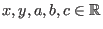
.
Furthermore, geometrically, a linear equation represents a straight line in the plane. The variables
 and
and  refer to the two coordinates of the plane. We write
refer to the two coordinates of the plane. We write  to
refer to a particular point on the plane. The variable
to
refer to a particular point on the plane. The variable  , the
-coordinate,
refers to the horizontal
position of a point. The variable
, the
-coordinate,
refers to the horizontal
position of a point. The variable  , the
-coordinate, refers to
the vertical position.
This is very similar to the way we refer to entries
in matrices using row and column indices. The difference is that
, the
-coordinate, refers to
the vertical position.
This is very similar to the way we refer to entries
in matrices using row and column indices. The difference is that  and
and  refer to
real numbers. Indices only use the counting numbers
refer to
real numbers. Indices only use the counting numbers
 or the integers (
or the integers (
 ).
).
All the pairs of scalars which are solutions for a linear equation are called the graph of the linear equation. We draw graphs of linear equations by putting in as many points as we need so that we might distinguish one equation from any other. Some examples of drawings of graphs are given below. (Even though it's not technically accurate, from now on we'll use the word graph to mean the drawing of a graph.)
The graph in Figure 1.3 on Page ![[*]](crossref.gif) represents a
plane with the line
formed by the linear equation
represents a
plane with the line
formed by the linear equation  . The vertical line labeled
is called
the y-axis. Similarly the horizontal line labeled x is
called the x-axis. In order to draw the line we have to use
a few of the algebraic properties of the real number field.
. The vertical line labeled
is called
the y-axis. Similarly the horizontal line labeled x is
called the x-axis. In order to draw the line we have to use
a few of the algebraic properties of the real number field.
We want the variable  to be alone on the left side of the equation.
So first we subtract 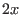
from both sides.
to be alone on the left side of the equation.
So first we subtract 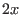
from both sides.
This gives us
Then we multiply both sides by
Notice that we had to use the distributive law on the right side of the equation. This allows us to finally write
Putting the equation in this form makes it easier to compute a  value
for a given
value
for a given  (we call this solving for y).
For instance, let 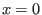
. Then
(we call this solving for y).
For instance, let 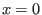
. Then
 .
We can see that the point
.
We can see that the point  is on the graph of the equation. This point is
called the y-intercept of the equation because it is where
the line cuts the y-axis.
is on the graph of the equation. This point is
called the y-intercept of the equation because it is where
the line cuts the y-axis.
As you may have already surmised, there is also an x-intercept. We
let 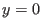
and solve either the original equation  or the altered form
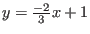
. Let's stick
into the original equation.
or the altered form
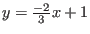
. Let's stick
into the original equation.
So the point
In order to draw a graph we first draw the x and y axes (the plural of axis), mark the points and place a ruler lined up against them to draw the line. (Or we can use software to do it for us, which we will do with Lamp).
Instead of writing  we could just write
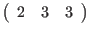
.
In other words, we have a matrix with one row and three columns. All we need to keep in mind
is that for a linear equation 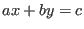
, the first column would refer to
we could just write
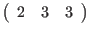
.
In other words, we have a matrix with one row and three columns. All we need to keep in mind
is that for a linear equation 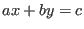
, the first column would refer to  and the second to
and the second to  .
The matrix
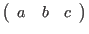
would be another way
of representing a linear equation. (The constants
.
The matrix
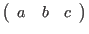
would be another way
of representing a linear equation. (The constants  and
and  are often referred to as the
coefficients of the linear equation and the constant
are often referred to as the
coefficients of the linear equation and the constant  is called a constant term.
The symbols
is called a constant term.
The symbols  and
and  represent the variables.)
represent the variables.)
Of course we are not limited to two variables. A linear equation in  variables
variables
 is
an equation that can be written in the form
is
an equation that can be written in the form
where 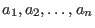 and
We will see shortly that this method of representing linear equations is very useful. First, however, we will learn to use Lamp to graph lines and become familiar with this representation.
or that
This would mean that
and that
and ultimately
This means that